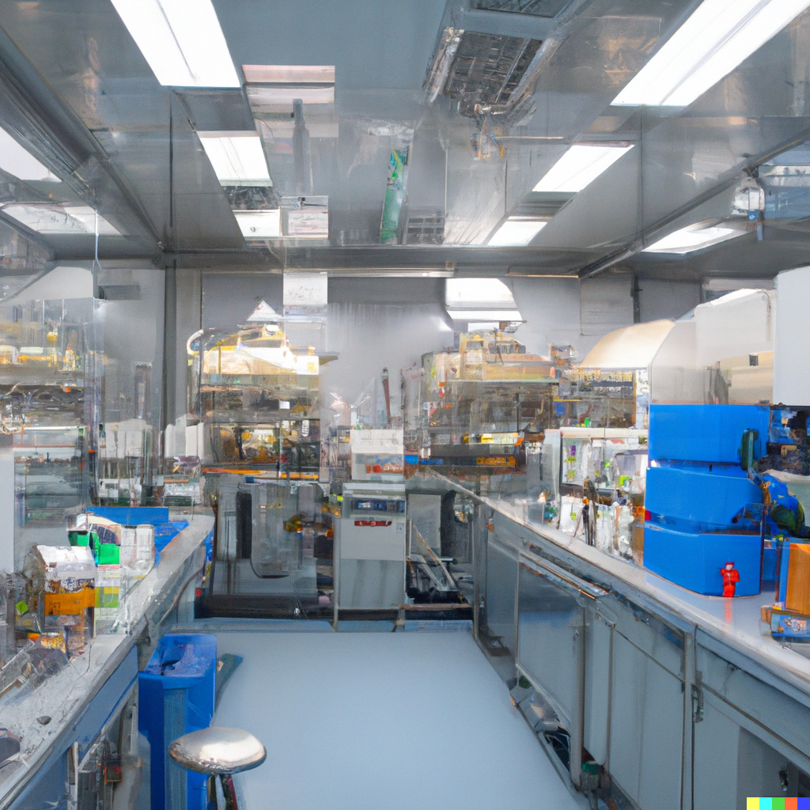

A squat grey building of only thirty-four stories. Over the main entrance the words, CENTRAL LONDON HATCHERY AND CONDITIONING CENTRE, and, in a shield, the World State's motto, COMMUNITY, IDENTITY, STABILITY.
The enormous room on the ground floor faced towards the north. Cold for all the summer beyond the panes, for all the tropical heat of the room itself, a harsh thin light glared through the windows, hungrily seeking some draped lay figure, some pallid shape of academic goose-flesh, but finding only the glass and nickel and bleakly shining porcelain of a laboratory. Wintriness responded to wintriness. The overalls of the workers were white, their hands gloved with a pale corpse-coloured rubber. The light was frozen, dead, a ghost. Only from the yellow barrels of the microscopes did it borrow a certain rich and living substance, lying along the polished tubes like butter, streak after luscious streak in long recession down the work tables.
"And this," said the Director opening the door, "is the Fertilizing Room."

Bent over their instruments, three hundred Fertilizers were plunged, as the Director of Hatcheries and Conditioning entered the room, in the scarcely breathing silence, the absent-minded, soliloquizing hum or whistle, of absorbed concentration. A troop of newly arrived students, very young, pink and callow, followed nervously, rather abjectly, at the Director's heels. Each of them carried a notebook, in which, whenever the great man spoke, he desperately scribbled. Straight from the horse's mouth. It was a rare privilege. The D. H. C. for Central London always made a point of personally conducting his new students round the various departments.
"Just to give you a general idea," he would explain to them. For of course some sort of general idea they must have, if they were to do their work intelligently-though as little of one, if they were to be good and happy members of society, as possible. For particulars, as every one knows, make for virture and happiness; generalities are intellectually necessary evils. Not philosophers but fretsawyers and stamp collectors compose the backbone of society.
"To-morrow", he would add, smiling at them with a slightly menacing geniality, "you'll be settling down to serious work. You won't have time for generalities. Meanwhile…"
Meanwhile, it was a privilege. Straight from the horse's mouth into the notebook. The boys scribbled like mad.
Tall and rather thin but upright, the Director advanced into the room. He had a long chin and big rather prominent teeth, just covered, when he was not talking, by his full, floridly curved lips. Old, young? Thirty? Fifty? Fifty-five? It was hard to say. And anyhow the question didn't arise; in this year of stability, A. F. 632, it didn't occur to you to ask it.
"I shall begin at the beginning," said the D.H.C. and the more zealous students recorded his intention in their notebooks: Begin at the beginning. "These," he waved his hand, "are the incubators." And opening an insulated door he showed them explained, "at blood heat; whereas the male gametes," and here he opened another door, "they have to be kept at thirty-five instead of thirty-seven. Full blood heat sterilizes." Rams wrapped in theremogene beget no lambs. Still leaning against the incubators he gave them, while the pencils scurried illegibly across the pages, a brief description of the modern fertilizing process; spoke first, of course, of its surgical introduction-"the operation undergone voluntarily for the good of Society, not to mention the fact that it carries a bonus amounting to six months' salary"; continued with some account of the technique for preserving the excised ovary alive and actively developing; passed on to a consideration of optimum temperature, salinity, viscosity; referred to the liquor in which the detached and ripened eggs were kept; and, leading his charges to the work tables, actually showed them how this liquor was drawn off from the test-tubes; how it was let out drop by drop onto the specially warmed slides of the microscopes; how the eggs which it contained were inspected for abnormalities, counted and transferred to a porous receptacle; how (and he now took them to watch the operation) this receptacle was immersed in a warm bouillon containing free-swimming spermatozoa-at a minimum concentration of one hundred thousand per cubic centimetre, he insisted; and how, after ten minutes, the container was lifted out of the liquor and its contents re-examined; how, if any of the eggs remained unfertilized, it was again immersed, and, if necessary, yet again; how the fertilized ova went back to the incubators; where the Alphas and Betas remained until definitely bottled; while the Gammas, Deltas and Epsilons were brought out again, after only thirty-six hours, to undergo Bokanovsky's Process.
"Bokanovsky's Process," repeated the Director, and the students underlined the words in their little notebooks.
One egg, one embryo, one adult-normality. But a bokanovskified egg will bud, will proliferate, will divide. From eight to ninety-six buds, and every bud will grow into a perfectly formed embryo, and every embryo into a full-sized adult. Making ninety-six human beings grow where only one grew before. Progress.
"Essentially," the D.H.C. concluded, "bokanovskification consists of a series of arrests of development. We check the normal growth and, paradoxically enough, the egg responds by budding."
Responds by budding. The pencils were busy.
He pointed. On a very slowly moving band a rack-full of test-tubes was entering a large metal box, another, rack-full was emerging. Machinery faintly purred. It took eight minutes for the tubes to go through, he told them. Eight minutes of hard X-rays being about as much as an egg can stand. A few died; of the rest, the least susceptible divided into two; most put out four buds; some eight; all were returned to the incubators, where the buds began to develop; then, after two days, were suddenly chilled, chilled and checked. Two, four, eight, the buds in their turn budded; and having budded were dosed almost to death with alcohol; consequently burgeoned again and having budded-bud out of bud out of bud-were thereafter-further arrest being generally fatal-left to develop in peace. By which time the original egg was in a fair way to becoming anything from eight to ninety-six embryos-a prodigious improvement, you will agree, on nature. Identical twins-but not in piddling twos and threes as in the old viviparous days, when an egg would sometimes accidentally divide; actually by dozens, by scores at a time.
"Scores," the Director repeated and flung out his arms, as though he were distributing largesse. "Scores."
But one of the students was fool enough to ask where the advantage lay.
"My good boy!" The Director wheeled sharply round on him. "Can't you see? Can't you see?" He raised a hand; his expression was solemn. "Bokanovsky's Process is one of the major instruments of social stability!" Major instruments of social stability.
Standard men and women; in uniform batches. The whole of a small factory staffed with the products of a single bokanovskified egg.
"Ninety-six identical twins working ninety-six identical machines!" The voice was almost tremulous with enthusiasm. "You really know where you are. For the first time in history." He quoted the planetary motto. "Community, Identity, Stability". Grand words. "If we could bokanovskify indefinitely the whole problem would be solved."
Solved by standard Gammas, unvarying Deltas, uniform Epsilons. Millions of identical twins. The principle of mass production at last applied to biology.
"But, alas," the Director shook his head, "we can't bokanovskify indefinitely." Ninety-six seemed to be the limit; seventy-two a good average. From the same ovary and with gametes of the same male to manufacture as many batches of identical twins as possible-that was the best (sadly a second best) that they could do. And even that was difficult.
"For in nature it takes thirty years for two hundred eggs to reach maturity. But our business is to stabilize the population at this moment, here and now. Dribbling out twins over a quarter of a century-what would be the use of that?" Obviously, no use at all. But Podsnap's Technique had immensely accelerated the process of ripening. They could make sure of at least a hundred and fifty mature eggs within two years. Fertilize and bokanovskify-in other words, multiply by seventy-two-and you get an average of nearly eleven thousand brothers and sisters in a hundred and fifty batches of identical twins, all within two years of the same age.
"And in exceptional cases we can make one ovary yield us over fifteen thousand adult individuals."
Beckoning to a fair-haired, ruddy young man who happened to be passing at the moment. "Mr. Foster," he called. The ruddy young man approached. "Can you tell us the record for a single ovary, Mr. Foster?"
"Sixteen thousand and twelve in this Centre," Mr. Foster replied without hesitation. He spoke very quickly, had a vivacious blue eye, and took an evident pleasure in quoting figures. "Sixteen thousand and twelve; in one hundred and eighty-nine batches of identicals. But of course they've done much better," he rattled on, "in some of the tropical Centres. Singapore has often produced over sixteen thousand five hundred; and Mombasa has actually touched the seventeen thousand mark. But then they have unfair advantages. You should see the way a negro ovary responds to pituitary! It's quite astonishing, when you're used to working with European material. Still," he added, with a laugh (but the light of combat was in his eyes and the lift of his chin was challenging), "still, we mean to beat them if we can. I'm working on a wonderful Delta-Minus ovary at this moment. Only just eighteen months old. Over twelve thousand seven hundred children already, either decanted or in embryo. And still going strong. We'll beat them yet."
"That's the spirit I like!" cried the Director, and clapped Mr. Foster on the shoulder.